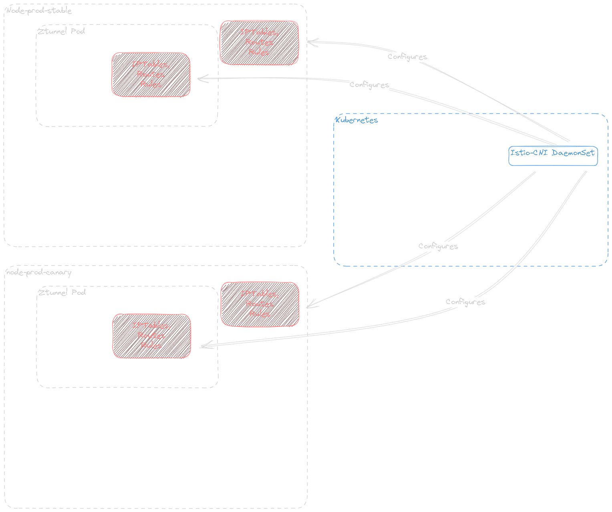
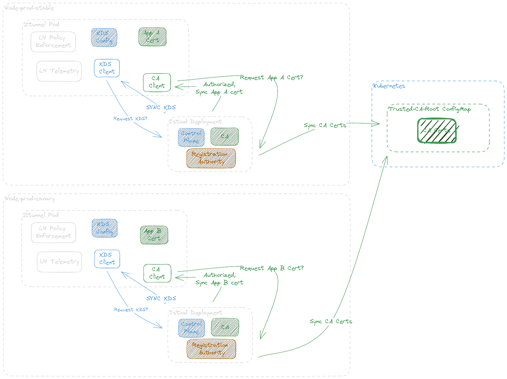
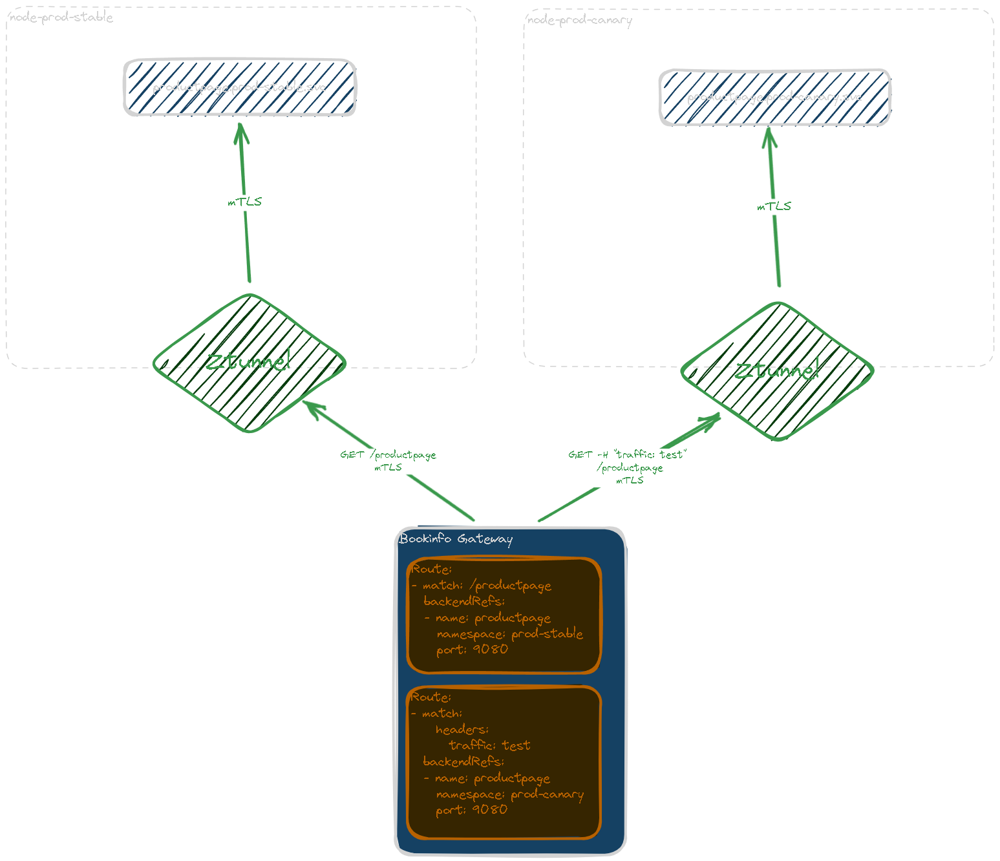

Exploring Canary Upgrades with Istio Ambient Mesh
Ambient Mesh leverages eBPF to reduce resource usage of Istio's data plane components. It eliminates the need for sidecar proxies because eBPF leverages the kernel network layer of worker nodes for mesh traffic management. The goal of this guide is to answer the following:
- What are the core components of Ambient Mesh?
- Which components are scoped to the kernel network layer
- Which components are scoped to the Kubernetes network layer?
- How does a canary upgrade of the Istio control plane work with Ambient Mesh?
Deploy Dependencies
- Install docker and kubectl
- Install kind:
[ $(uname -m) = x86_64 ] && curl -Lo ./kind https://kind.sigs.k8s.io/dl/v0.20.0/kind-linux-amd64 chmod +x ./kind sudo mv ./kind /usr/local/bin/kind sudo kind create cluster --config=- <<EOF kind: Cluster apiVersion: kind.x-k8s.io/v1alpha4 name: ambient networking: apiServerAddress: "10.0.0.152" apiServerPort: 6443 nodes: - role: control-plane - role: worker - role: worker EOF - Generate kubeconfig:
- Install MetalLB:
kubectl apply -f https://raw.githubusercontent.com/metallb/metallb/v0.13.7/config/manifests/metallb-native.yaml # Determine Docker pod IPAM CIDR sudo docker network inspect -f '{{.IPAM.Config}}' kind # Add IP Address Pool kubectl apply -f <<EOF apiVersion: metallb.io/v1beta1 kind: IPAddressPool metadata: name: example namespace: metallb-system spec: addresses: - 172.18.255.200-172.18.255.250 --- apiVersion: metallb.io/v1beta1 kind: L2Advertisement metadata: name: empty namespace: metallb-system EOF - Add Kubernetes Gateway API CRDs
OPTIONAL: Test MetalLB Functionality Before beginning
Before you run into issues with communicating with bookinfo through its gateway, make sure that metallb is accessible and working before you begin. Kind provides easy documentation to do so.
Understanding Ambient Mesh's Core Components
Deploy Ambient Mesh following the Istio Ambient Mesh Getting Started Guide:
Identify Ambient Mesh's Core Components
Deploy Istio using istioctl and we should see exactly what components are being deployed:
## Install istioctl
wget https://github.com/istio/istio/releases/download/1.18.0-alpha.0/istio-1.18.0-alpha.0-linux-amd64.tar.gz
tar xzf istio-1.18.0-alpha.0-linux-amd64.tar.gz
sudo cp istio-1.18.0-alpha.0/bin/istioctl /usr/local/bin/istioctl
pushd istio-1.18.0-alpha.0
## Install Istio
istioctl install --set profile=ambient --skip-confirmation
✔ Istio core installed
✔ Istiod installed
✔ CNI installed
✔ Ingress gateways installed
✔ Ztunnel installed
✔ Installation complete
The ambient profile's IstioOperator configuration can be found in manifests/profiles/ambient.yaml within the Istio release archive. This deploys istio-cni, istio-core (Base CRDs), istiod (control plane), and ztunnel (data plane) by default. These component installations must be managed separately for a production-like release process.
We can see the following is installed:
- Istio-CNI -
DaemonSetchained CNI - Istio Core - CRDs
- Istiod -
Deploymentcontrol plane - Ztunnel -
DaemonSetnode-level mesh
According to the Istio-CNI documentation regarding Canary Upgrades, Istio-CNI's DaemonSet is scoped to the Kubernetes cluster level, and should not deploy as a canary release.
Ztunnel acts as a node-level mesh manager for Istio. Since there is not much in the way of documentation for Ztunnel at the time of this writing, we must rely on Ztunnel's logs and the source code to understand its network scope. Looking at Ztunnel's logs reveals its live configuration:
We can see that Ztunnel expects to get CA and XDS information from https://istiod.istio-system.svc/15012. From this, we can update our prior assumptions:
- Ztunnel is designed to receive network information from a single
istiodservice address - Revisioned Istio releases suffix the
istiodcontrol plane with the values of therevisionattribute provided - Therefore, Ztunnel expects to connect to a single revision of the control plane, and should be revisioned as well
Understanding Component Scope
We can draw the following conclusions:
- Istio-CNI is designed as a cluster singleton that can manage network information for multiple revisioned control planes: 
- Istiod is scoped to the Kubernetes layer and manages the configuration of a single mesh. Even though multiple Istiod revisions can be a part of the same control plane, their XDS configurations should be treated as separate; they only share trusted root CA configurations. Additionally, Ztunnel is scoped to the node network layer but relies on a single revisioned control plane, so it must also be revisioned. This means that it should not deploy to all nodes, but select a specific node with a matching revision label. 
- Finally, Bookinfo Gateway can split traffic between bookinfo-prod-stable and bookinfo-prod-canary in a canary deployment: 
Deploy Stable Ambient Mesh Revision
- Label a single node so that it can schedule the current revision of Istio components
- Install
istio-cni - Install
istiodandztunnel - Next, deploy the workloads. They must live on the
ambient-workernode to be a part of the mesh, so each service gets anodeSelectorconfiguration: - Deploy the Bookinfo Gateway
- Send a request to productpage to make sure it works:
- Label the namespace to add the workloads to Ambient Mesh
- Send a request to Product Page through Ambient:
Great! It's all working. Next, let's configure the next release.
Deploy Canary Ambient Mesh Revision
-
Clone the project repository.
-
Label Node with Canary Revision
- Deploy the Istio components:
- Deploy Canary Workloads
# create new ns for bookinfo kubectl create ns bookinfo-1-18-1 kubectl apply -f 1-18-1/bookinfo.yaml -n bookinfo-1-18-1 kubectl apply -f 1-18-1/sleep.yaml -n bookinfo-1-18-1 kubectl apply -f 1-18-1/notsleep.yaml -n bookinfo-1-18-1 # label namespace kubectl label namespace bookinfo-1-18-1 istio.io/dataplane-mode=ambient
Prepare Bookinfo Gateway for Canary
Configure the HTTPRoute to match the traffic=test header, and route it to the canary workloads:
- To canary the release, add a route that matches on the header
traffic: test, which will be used when cURLing the canary workloads later on. Be sure to include the namespaces of each release.
Canary Deployment
- Update Routes Now Bookinfo is ready to take canary traffic.
- Test canary traffic You should see the traffic come back as expected. Now it's time to shift traffic over to the new release.
Blue-Green Deployment
Update the HttpRoute with the following:
- This should be done multiple times while running load. An arbitrary example would be 10%, 50%, then 100% of traffic to the canary release.
Then begin shifting traffic:
- Shift traffic to the canary:
- Once the blue-green deployment is complete, the
1-18-0-alpha-0resources should be ready to clean up:
Conclusion
Canary Upgrades for Ambient Mesh differ wildly from vanilla Istio. Managing canaries at the node level provide some unforseen challenges, but also provides an opportunity to better organize kubernetes workloads along the physical constraints of each node. This may not provide the flexibility that some are used to with kubernetes, but workloads should take locality into account for optimal performance anyway.